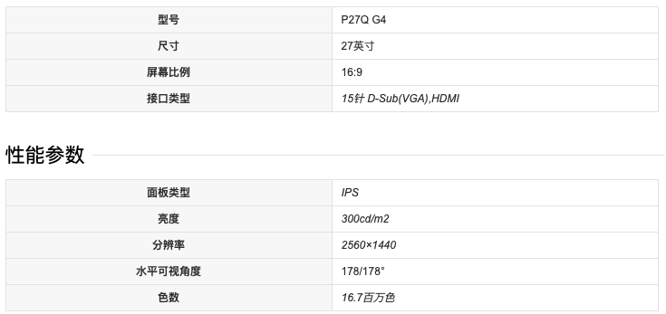

一厘米是多少像素，分辨率到底是什么意思？
文章目录
像素这个词一直困扰了我很久，一直对这个词不清不楚，只知道大概能表示长度，但是图片的高清又怎么通过像素体现呢？
像素
像素，英文缩写px，是一个最小的显示单位。在计算机媒介中，文本数据是一维的，维度一般是字节的偏移量。图片是二维的，有横坐标，纵坐标。可以理解为一个二维矩阵，矩阵中的每个值为颜色编码，这个值，就是一个像素。
一厘米=n像素，这个n是多少呢？这个取决于显示的硬件，DPI表示一英寸有多少像素，在70dpi下，n=70*2.54（一英寸=2.54厘米）。
分辨率
一般来说，分辨率表示显示分辨率和图片分辨率。
显示分辨率
显示分辨率，也指屏幕分辨率，就是屏幕上显示的像素个数，分辨率160×128的意思是水平方向含有像素数为160个，垂直方向像素数128个。
这时候我疑惑的是显示器有没有的DPI这一属性呢，后来发现，当一个显示器的分辨率的确定的时候，它的DPI就已经确定了。以我的显示器HP P27q G4举例，以下是它的参数：

在该显示器下打开网页DPI计算，看到计算出的当前显示器dpi=96，为了验证这个值，我们需要算下显示器的长宽是多少英寸。
根据勾股定理和屏幕比例，可以计算出长为24.4，宽为14.62。分别拿这个值*96，计算屏幕像素点个数为2342 x 1403，这个值和屏幕的参数的分辨率一致（误差可以忽略）。
说到这里，可以得到一个结论，图片在显示器中显示的相对大小是受DPI影响的。假设给两个同样尺寸但分辨率不同的显示器，同样的图片，在高分辨下的显示器下，图片就显得小，显示细腻。这是因为同样尺寸的屏幕，分辨率越高的屏幕DPI也越大，那么同样的照片，在DPI高的显示器下，显示的面积/显示器面积就越低，因此图片显得小。一英寸下的像素点多了，也当然显得更细腻了。
一个比较常见的现象就是用macbook装windows后，window图标显得很小，如果想显得正常，就需要图标按同样的比例提高清晰度。
图片分辨率
最后，分辨率的确不一样，这个还是需要记得的。
常见问题
为什么mac下截屏到外接显示器下看就很花?
文章作者 fengfshao
上次更新 2021-05-08